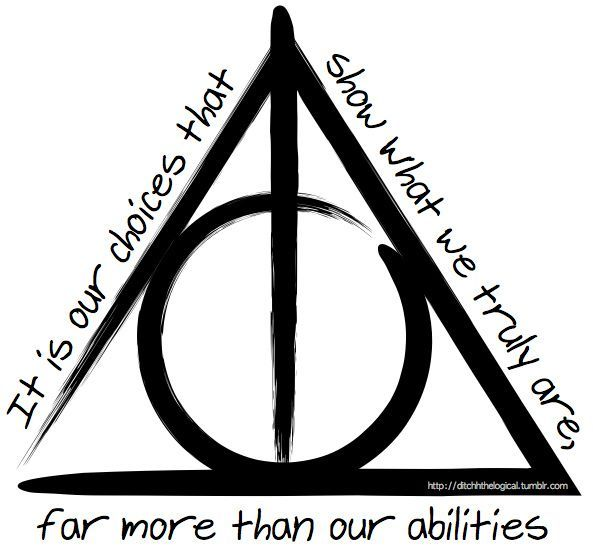

Check the Story Video!
Here's a link to the Story if you would rather read it.
The Deadly Hallows
The three objects mentioned during the tale are believed by some to be the Deathly Hallows, the most powerful magical objects of their kind in existence. The Elder Wand is the unbeatable wand of the oldest brother, the Resurrection Stone is the stone given to the second brother that can bring back the dead, and the Cloak of Invisibility is the cloak given to the third brother that could hide the wearer even from Death.